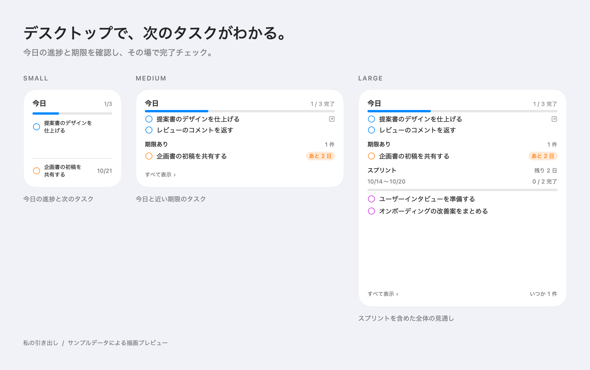

思いついたら、すぐ入れる
メニューバーのクイック入力、⌘N の追加シート、どのアプリからでもテキストを選択して右クリック →「引き出しにタスクを追加」。1 行目がタイトル、残りがメモになります。
macOS task manager on your desktop
ウィジェットが「今日」「期限あり」「スプリント」を常に見せ、メニューバーからすぐ足せる。Claude からは MCP 経由でタスクを読み書き。データはあなたの Mac のローカルに置かれます。

One drawer
タスクを入れる場所はひとつ。メニューバーのポップオーバー、一覧ウィンドウ、ウィジェット、そして Claude が、同じ引き出しを開け閉めします。
メニューバーのクイック入力、⌘N の追加シート、どのアプリからでもテキストを選択して右クリック →「引き出しにタスクを追加」。1 行目がタイトル、残りがメモになります。
「今日」は今日の終わり、「スプリント」は今のスプリントの最終日、「期限あり」は日付指定、「いつか」は期限なし。約束の強さで分けるから、並べ替えに迷いません。
人・ウィジェット・AI のどれが変更したかを操作履歴に記録。AI が勝手に変えたものも一覧で確認でき、その場で取り消せます。削除はすべて論理削除です。
Main window
Desktop widget
今日の進捗と期限を確認し、その場で完了チェック。行の丸で完了、タイトルで本体の該当タスクを開きます。本体が書き込めば数百ミリ秒で描き直されます。

Works with Claude
アプリの中に LLM はありません。MCP サーバーとしてタスク操作を公開し、Claude Code や Claude Desktop から呼び出します。
一覧、追加、更新、完了、アーカイブ、プロジェクト一覧、コメント。会議の議事録から「今日やること」を起こす、といった使い方ができます。
AI が進めた作業の報告は、タスクのコメントとして残ります。本体のスレッドで読み、必要なら返事を書けます。
AI が作ったタスクには印が付き、変更は差分つきで操作履歴に残ります。やりすぎたら履歴から戻す。物理削除は AI に公開していません。
Download
Developer ID で署名し、Apple の公証を通した zip を配布しています。Apple Silicon と Intel の両方で動きます。
Hikidashi.app を /Applications に移動する# Claude Code $ claude mcp add hikidashi -- \ /Applications/Hikidashi.app/Contents/Helpers/TaskMCP # Claude Desktop: claude_desktop_config.json { "mcpServers": { "hikidashi": { "command": "/Applications/Hikidashi.app/Contents/Helpers/TaskMCP" } } } # 共有 DB に届いているか確認 $ /Applications/Hikidashi.app/Contents/Helpers/TaskMCP --check